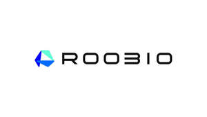

Trade Mark Journal No.2025/009 28 February 2025
UK00004161435 17 February 2025 (9,42)

- Class 9
- Humanoid robots with artificial intelligence; humanoid robots with artificial intelligence for use in scientific research; security surveillance robots; tactical robots; telepresence robots; laboratory robots; teaching robots; humanoid robots having communication and learning functions for assisting and entertaining people; user-programmable humanoid robots, not configured; computer application software for robots; downloadable operating system program; recorded computer software as a component part for operation of industrial and humanoid robots; computer software for control of robots; smart devices application software for programming of robots; smart devices application software for control of robots; computer software for programming of robots; operating system software for robots; computer software platforms, recorded or downloadable; chatbot software for simulating conversations; downloadable computer software for collecting, analyzing and organizing data in the field of deep learning; computer software, recorded; artificial intelligence software; downloadable mobile phone software applications; computer programs, downloadable; computer hardware; remote control apparatus for robots; electronic control apparatus for robots; electric control panels; industrial automation controls; electric sensors; optical sensors; sensors for measuring speed; sensor controllers; sensors for determining position; sensors for monitoring physical movements; internet of things sensors; computer peripheral devices for data reproduction; data processing equipment; computer networking hardware; automatic focusing projectors; electronic control systems for machines; machine-readable data carriers recorded with programs; global positioning system apparatus; fast chargers for mobile devices; optical character recognition apparatus; digital signal processors; apparatus for recording data; radioactivity measuring apparatus; electronic animal identification apparatus; devices for the projection of virtual keyboard; apparatus and instruments for reproducing of data; apparatus for broadcasting sound, data or images; computer hardware modules for use in electronic devices using the internet of things; face recognition devices; pedometers; electronic notice boards; equipment for network communication; chips [integrated circuits]; sensors; batteries, electric; remote control telemetering machines and instruments; computer input devices; computer keyboards; computer memory devices; computer peripheral devices; computer terminals; computers; flat panel display screens; head-mounted video displays; head-mounted virtual reality headsets; headphones; microphones; smart ring; smart audio speakers; smart wristbands; smart glasses.
- Class 42
- Rental of robots; rental of user-programmable humanoid robots, not configured; rental of laboratory robots; rental of humanoid robots with artificial intelligence; technical consulting in the field of monitoring technological functions of humanoid robots with artificial intelligence; rental of parts for robots; providing temporary use of online non-downloadable computer software for robot learning simulating conversations; providing temporary use of online non-downloadable simulation software for modeling robotic features; providing temporary use of online non-downloadable simulation software for modeling robotic features including a simulation software environment for multiple types of robots, including humanoid, quadruped, wheel based mobile robots, and industrial robot arms for manufacturing, logistic, retail and other applications; providing temporary use of non-downloadable software for the design and development of artificial intelligence bots; providing temporary use of non-downloadable integrated software packages for developing bots; providing temporary use of non-downloadable software for natural language processing, generation, understanding and analysis; providing temporary use of non-downloadable software for voice and speech recognition; providing temporary use of non-downloadable software for the design and development of conversation and voice user interfaces and applications; design and development of conversation and voice user software interfaces and applications; software as a service (SAAS) services featuring chatbots for entertainment, educational, personal and business purposes; software as a service (SAAS) services featuring software for use in machine learning, deep learning, artificial intelligence, natural language processing, data mining, data analysis, predictive analytics, and business intelligence; software as a service [SAAS]; platform as a service [PAAS]; virtual testing of new product designs using computer simulations; design and development of computer hardware and computer software in the field of robotics; design of robots; research and development of robots; engineering services relating to robotics; design of parts for robots; research and development of parts for robots; technology research in the field of analytics, artificial intelligence, natural language understanding, and natural language processing; research and development services in the field of artificial intelligence; design and development of computer hardware and software.
Lemon, Inc.
Representative: Meissner Bolte (UK) Limited